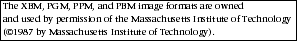
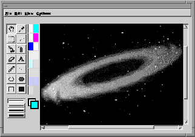
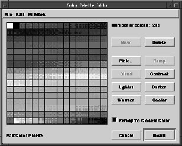

Image Editor
The image editor provides a common interface to the user for creating images. The image editor comes with a complete set of tools and choosers for drawing images, selecting fonts and colors, and importing and exporting images in various formats. Image formats supported by the image editor are:
- GIF PBM
- XBM ICO
- PGM DIB
- PPM BMP
- 
Component Overview
Figure 42 shows an image editor containing a galaxy. The components of the image editor are described on the following pages.
Figure 42. The image editor

Use the File Menu commands (listed in Table 24) to import and export images, set the size of the image in the editor, revert to a previous version, and close the editor.
Menu Bar
The image editor's menu bar contains the File, Edit, View, and Options menus. Accelerator keys are defined for most menu commands.
| Command | Description |
|---|---|
| Close | Closes the image editor. The image currently being edited is applied in the application. |
| Save | The image currently being edited is applied in the application but the image editor does not close. |
| Import... | Opens a file chooser* to select an image to import. |
| Export... | Opens a file chooser* to select a destination to export your image. |
| Set Size... | Opens the image size dialog. Use this dialog to specify the size of an image. |
| Revert | Discards any changes to the editor since it was last opened or saved. |
*The file chooser is also a stand-alone Galaxy chooser and is discussed in the File Chooser chapter.
The Edit Menu provides cut, copy, and paste commands in addition to other editing operations for selected areas of an image. These commands are listed in Table 22.
| Command | Description |
|---|---|
| Undo | Reverses the most recent editing action. Use it repeatedly to undo a series of actions. |
| Redo | Restores the most recent editing action reversed by the undo command. |
| Cut | Removes the selected area from the image editing area, and makes it available for a subsequent paste action. |
| Copy | Copies the selected area from the image editing area, and makes it available for a subsequent paste action. |
| Paste | Places a previously copied or cut selection onto the center of the image editing area. Use the hand tool to reposition the pasted selection. |
| Clear | Removes the selected area from the image editing area. The removed selection is not available for a subsequent paste operation. |
| Rotate | Rotates the selected area 90 degrees. |
| Flip Horizontal | Mirrors the selected area horizontally. |
| Flip Vertical | Mirrors the selected area vertically. |
| Mask Selection | Creates a mask for the selected area. Any area of the image containing the background color is masked out. This mask is a starting point for creating a final mask. |
| Crop to Selection | Crops the image so only the selected area remains. |
The View Menu contains contains several options (listed in Table 22) to specify the magnification of the image being edited. This menu also contains options to define the appearance of the Image Editing Area.
| Command | Description |
|---|---|
| Fat Bits | Magnifies the image in the Image Editing Area so each pixel can be viewed. When Fat Bits is disabled, the image returns to its actual size. (The default magnification is 5 times the size of the image.) |
| Draw From Center | Defines the starting point for certain drawing tools. Normally, the line, ellipse, and rectangle tools begin drawing an item from the end (or perimeter) of the item. Draw From Center specifies that drawing begins at the center of the item. |
| Show Grid | Displays the image in a grid. Individual pixels are outlined with the grid pattern. The grid is not shown when the bit size displayed is smaller than 3 pixels. |
| Show Position | Displays the coordinates of an image above the Image Editing Area. The coordinates provide information on the position, direction, and size of editing operations (refer to Table 24 for more information). |
| Preview | Displays the entire image in a separate Preview Window. If you use the Hand Tool to pan through an oversize image in the Image Editing Area, the area currently in the Image Editing Area is outlined in the Preview Window. |
| Zoom In | Magnifies the image in the Image Editing Area. Select it repeatedly to continually increase the magnification. |
| Zoom Out | Decreases the magnification of the image in the Image Editing Area. Select it repeatedly to continually decrease the magnification. |
When the Show Position command of the View Menu is enabled, the specifications listed in Table 24 are displayed in the image editing area.
| Specification | Description |
|---|---|
| X: | The position of the item on the X axis.* |
| Y: | The position of the item on the Y axis.* |
| DX: | The change in X as you draw or move an item. |
| DY: | The change in Y as you draw or move an item. |
| Len: | The distance between the starting point of the operation and the current position. |
| Ang: | The arc, in degrees, described from the starting point as you draw or move an item. |
*The origin of the image is located at the lower left corner of the image.
Use the Options Menu commands (listed in Table 24) to select fonts, choose and edit color palettes, and to create transparencies for an image. The Color Palette Editor is described later in this chapter.
| Command | Description |
|---|---|
| Choose Font... | Opens a font chooser.* Use the font chooser to select fonts for use in your image. |
| Edit Colors... | Opens the Color Palette Editor. Use the Color Palette Editor to select and edit color palettes. |
| Create Transparency | Creates a Transparency Editing Area adjacent to the Image Editing Area. A transparency is a mask of an image. The areas of a transparency that are not white are masked out in the image. Use the Mask Selection command from the Edit Menu after selecting this option to get a starting point for creating a mask. |
*The font chooser is also a stand-alone Galaxy chooser and is discussed on "Font Chooser" on page 351.
Tool Palette
The Tool Palette of the image editor provides the tools described in Table 26 to draw and edit images in the Image Editing Area. The tools are listed in their order of presentation on the palette.
| Tool | Description |
|---|---|
| Hand Tool | Repositions the visible part of the image when an oversize image is in the Image Editing Area. Select and drag the oversize image with the Hand Tool to reposition the image. |
| Dropper Tool | Picks up the color from a pixel in the image. Click anywhere in the Image Editing Area to pick up a color. The color you pick up is displayed in the Color Palette and the Foreground Color Box. To pick up a background color, press the Control key when you click the Dropper Tool. |
| Selection Tool | Selects a rectangular area of an image for editing. Drag the mouse with the Selection Tool to describe the selected area of the image. To select the entire Image Editing Area, double- click the Selection Tool in the Tool Palette. |
| Lasso Tool | Selects any area of an image for editing. Drag the mouse with the Lasso Tool to surround the area you want to select. |
| Fill Tool | Fills any enclosed area of an image with the foreground color. Click an enclosed area of the image with the Fill Tool to fill the area with the foreground color. |
| Spray Can Tool | Draws the foreground color with a "spray" pattern. Drag the Spray Can Tool across the image to draw the pattern. |
| Eraser Tool | Replaces the color of an image with the background color. Drag the Eraser Tool over the area you want to erase. Press the Shift key before erasing to constrain the Eraser Tool horizontally or vertically. To clear the entire editing area, click in the Image Editing Area, and then double-click the Eraser Tool in the Tool Palette. |
| Text Tool | Places text into the image. Click in the Image Editing Area with the Text Tool to open an Image Text Window. Text entered in the Image Text Window appears as a selection in the image. |
| Pencil Tool | Draws or erases one pixel at a time. Click in the Image Editing Area with the Pencil Tool to draw or erase a pixel. If the area clicked is the foreground color, it becomes the background color. Otherwise, an area clicked becomes the foreground color. Drag the Pencil Tool to draw a continuous line. |
| Line Tool | Draws straight lines. Drag the Line Tool in the Image Editing Area to draw a straight line. Press the Shift key during the drag operation to constrain the line horizontally, vertically, or to a 45-degree angle. |
| Ellipse Tool | Draws an ellipse. Drag the Ellipse Tool in the Image Editing Area to draw an ellipse. Press the Shift key during the drag operation to constrain the ellipse to a circle. |
| Filled Ellipse Tool | Draws a solid ellipse. Drag the Filled Ellipse Tool in the Image Editing Area to draw a solid ellipse. Press the Shift key during the drag operation to constrain the ellipse to a circle. |
| Rectangle Tool | Draws a rectangle. Drag the Rectangle Tool in the Image Editing Area to draw a rectangle. Press the Shift key during the drag operation to constrain the rectangle to a square. |
| Filled Rectangle Tool | Draws a solid rectangle. Drag the Filled Rectangle Tool in the Image Editing Area to draw a solid rectangle. Press the Shift key during the drag operation to constrain the rectangle to a square. |
Line Width Palette
The line width for drawing can be set with the Line Width Palette. Setting the line width applies to the following drawing tools:
- Line Tool
- Ellipse Tools
- Rectangle Tools
Color Palette
Use the Color Palette to select foreground and background colors for drawing. The color palette displays the 16 most recently used colors from the Extended Color Palette. To display the Extended Color Palette, click and hold either the Foreground or Background Color Box.To select a foreground color, click on a color in the Color Palette; to select a background color, press the Control key before clicking. Foreground and background colors can also be selected from the Extended Color Palette. While the Extended Color Palette is displayed, drag the pointer to the new color and release the mouse button.
Preview Window
The Preview Window provides an actual size copy of the image you are editing. Changes made in the editor are reflected in the Preview window as you make them. If the image is too large to fit in the Image Editing Area, you can use the Preview Window to select an area to edit. To do this, select and hold an area in the Preview Window. Drag the rectangle that appears to the portion of the image you want to edit. Conversely, if you are using the hand tool to position an oversize image in the Image Editing Area, the Preview Window tracks the portion of the image that is visible.
Color Palette Editor
The Color Palette Editor, shown in Figure 43, contains five color palettes you can use with your images. You can create and save additional color palettes with the Color Palette Editor.
Figure 43. The Color Palette Editor

Use the File Menu of the Color Palette Editor to revert to a previous version of the editor. Palettes you have created with the editor can be saved using the Save... option.
Use the Edit Menu of the Color Palette Editor to cut, copy, and paste selected cells of the editor. You can also undo the most recent action made in the editor from the Edit Menu.
Use the Palettes Menu to select a palette for your image, or delete any previously saved palette.
The additional features of the Color Palette Editor are described in Table 27. When editing a color in the Color Palette editor, the color chooser appears. The color chooser is also a stand-alone Galaxy chooser and is discussed elsewhere in this document.
| Option | Description |
|---|---|
| New | Adds a new color to the palette. You can keep adding colors until the grid contains 256 colors. |
| Delete | Removes a color or range of colors. |
| Pick | Opens the color chooser. Use the Pick option to redefine an individual color on the palette. |
| Ramp | Creates a range of colors, from white to black. The first color selected in a series is the middle color of the ramp. |
| Blend | Modifies a series of colors so that the colors range gradually from the first color in the original series to the last color in the original series. |
| Contrast | Changes the selected colors to its complement. |
| Lighter | Adds white to the selected color. |
| Darker | Adds black to the selected color. |
| Warmer | Adds red to the selected color. |
| Cooler | Adds blue to the selected color. |
| Install | Adds the displayed color palette to the image. |
| Cancel | Cancels any editing performed and closes the Color Palette Editor. |
| Remap to Closest Color | Matches the colors of the current palette to the closest colors of a new palette. If you want to minimize changes to an image when installing a new palette, use Remap to Closest Color. If Remap to Closest Color is not enabled, the colors on the newly installed palette are mapped according to their position on the palette. |
Using the Image Editor
Use SetImage to set its current image. An image needs to be set in an image editor before the editor is functional.
Default values can be set for various user options in the image editor. The user can override these default values after the image editor is opened. Use SetGrid to enable a drawing grid for the Image Editing Area. Use SetBitSize to define the default size the editor uses to display pixels in the Image Editing Area. Use SetPreview to display the Preview Window when the image editor opens. If you want to add additional menu items to the image editor, use GetMenuBar to access its menu bar.
Although the image editor provides file choosers for importing and exporting images, you may want to directly access the the image being edited. Use GetImage to access the image being edited or GetSelection to access a user selected area of the image.
Table of Contents
Help Map
Need help? Contact Visix.